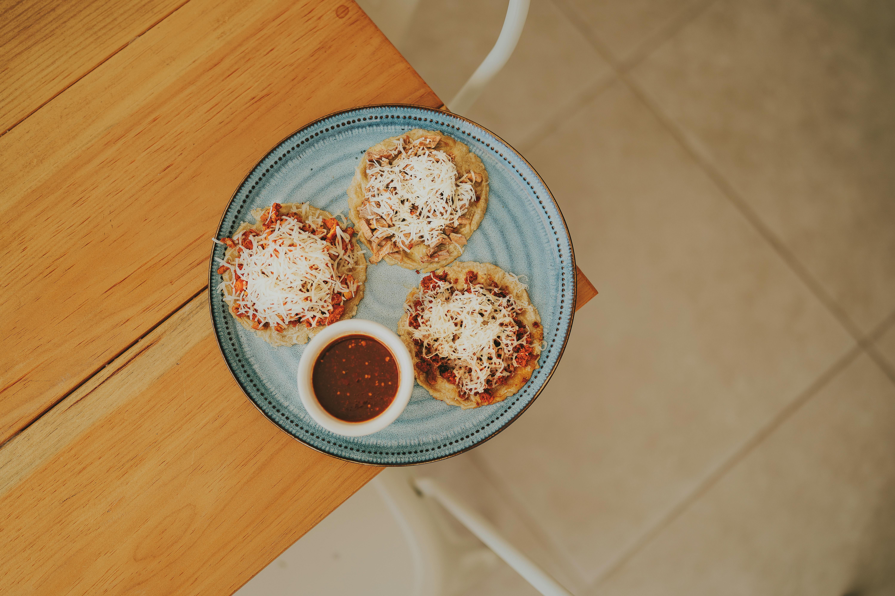

Sopes

Description
The following recipe shows how to make this quick and easy mexican craving
Ingredients
- 3 cups dough flour
- 1 tablespoon salt
- 2 cups of warm water
- 1 quarter of frying oil
- Fried beans
- Various toppings (onions, cabbage, cheese, chorizo, steak)
Steps
- Whisk masa harina and salt together in a bowl. Stir in enough water until dough is smooth and holds together.
- Form dough into twelve 2-inch balls. Place balls onto parchment paper and flatten to 1/2-inch thick circles.
- Heat oil in a deep fryer or large saucepan to 400 degrees F (200 degrees C).
- Working in batches, fry a few sopes at a time until lightly browned, about 30 seconds per side. Transfer with tongs to a paper towel-lined plate and let cool just until they can be handled, 2 to 3 minutes. Pinch the edges of each sope together to form a little boat.
- Return sopes to the hot oil and fry until golden and cooked through, 1 to 2 more minutes. Drain on paper towels.
- Spread the beans on the sopes
- Add Toppings like cabbage, chorizo, steak, etc.
Home